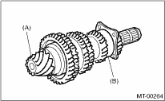
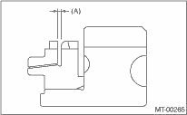
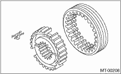

MANUAL TRANSMISSION AND DIFFERENTIAL(5MT) > Drive Pinion Shaft Assembly
Disassembled parts should be washed clean first and then inspected carefully.
1. Bearing
Replace the bearings in the following cases.
• If the ball bearing, outer race or inner race is damaged or rusted
• In case of worn or damaged bearings
• In the case that the bearing fails to turn smoothly or makes an abnormal noise when turned, even after gear oil lubrication.
• The roller bearing on the rear side of the drive pinion shaft should be checked for smooth rotation before the drive pinion assembly is disassembled. In this case, because a preload is working on the bearing, its rotation feels like it is slightly dragging unlike other bearings.

|
(A) |
Drive pinion shaft |
|
(B) |
Roller bearing |
• When bearing has other defects.
2. Bushing (each gear)
Replace the bushing in following cases.
• When the sliding surface is damaged or abnormally worn.
• When the inner wall is excessively worn.
3. Gear
• Replace gears with new part if its tooth surfaces are broken, damaged or excessively worn.
• Correct or replace if the contact with the baulk ring cone is rough or damaged.
• Correct or replace if the inner surface or end face is damaged.
4. Baulk ring
Replace the ring in following cases:
• When the inner surface and end face are damaged.
• When the ring inner surface is excessively or partially worn down.
• If the gap between the end faces of the ring and the gear splined part is excessively small, check the clearance (A) while pressing the ring against the cone.
Clearance (A):
0.5 — 1.0 mm (0.020 — 0.040 in)

• When the contact surface of the synchronizer ring insert is damaged or excessively worn down.
5. Shifting insert key
Replace the insert if deformed, excessively worn or defective in any way.

6. Oil seal
Replace the oil seal if the lip is deformed, hardened, worn or defective in any way.
7. O-ring
Replace the O-ring if the sealing face is deformed, hardened, damaged, worn or defective in any way.